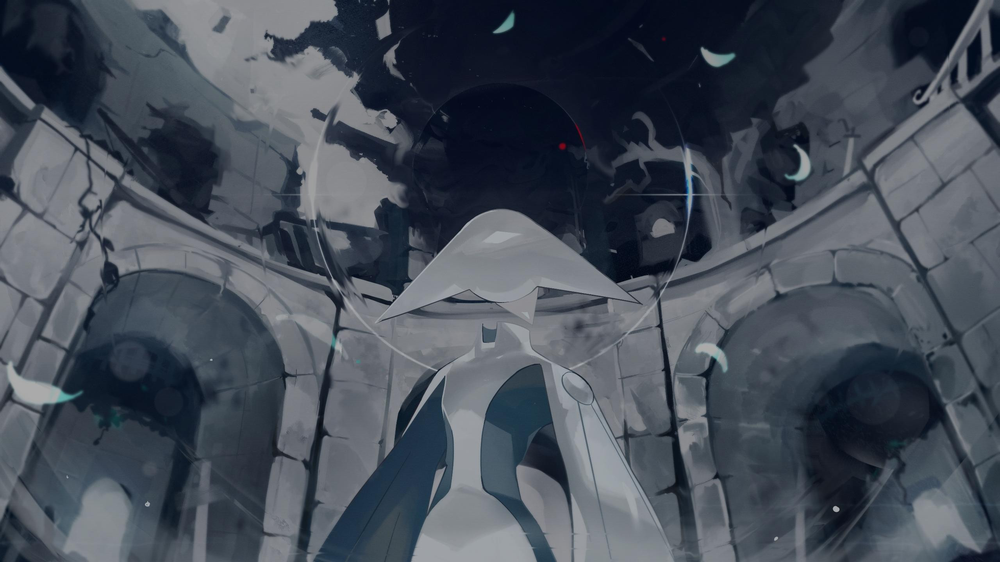
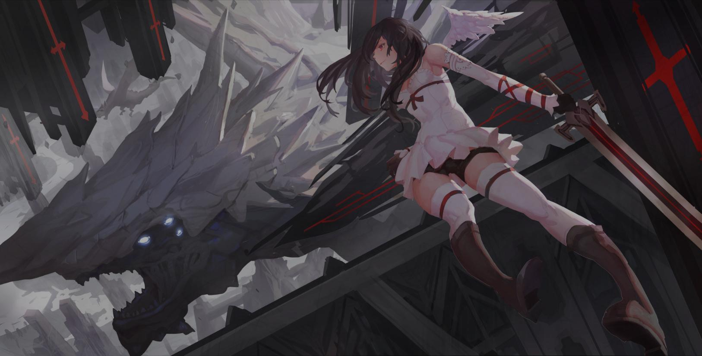

4.82
NM
NM
-+
daisan
5.12
NM
NM
VEZZELiX
Reku Mochizuki
Mapper: Chaoslitz
Difficulty: iREDi'S iNSANE
Beatmap ID: 3910493
CS
3.8
AR
9.0
OD
7.4

190.0

1:50

950

5.19
NM
NM
Myths Orbis
Raimukun
Mapper: knowledgeking
Difficulty: nik's Insane
Beatmap ID: 4392407
CS
3.8
AR
9.0
OD
8.0
210.0
2:02
992

5.55
NM
NM
Xevel
Tatsh
5.72
NM
NM
まっしろスタートライン (TV Size)
Mashumairesh!!
5.56
NM
NM
よいまちカンターレ (TV Size)
コーロまちカド
5.73
NM
NM
Tower Of Heaven (You Are Slaves) (Cut Ver.)
Feint
5.52
NM
NM
True Blue
dj TAKA feat. AiMEE
5.43
NM
NM
KIRISAME MAGIC (DJ katsu CLUB EDIT)
FN2 feat. 花たん
6.05
NM
NM
はずかしがりやのトイ・ソルジャー
ああああ